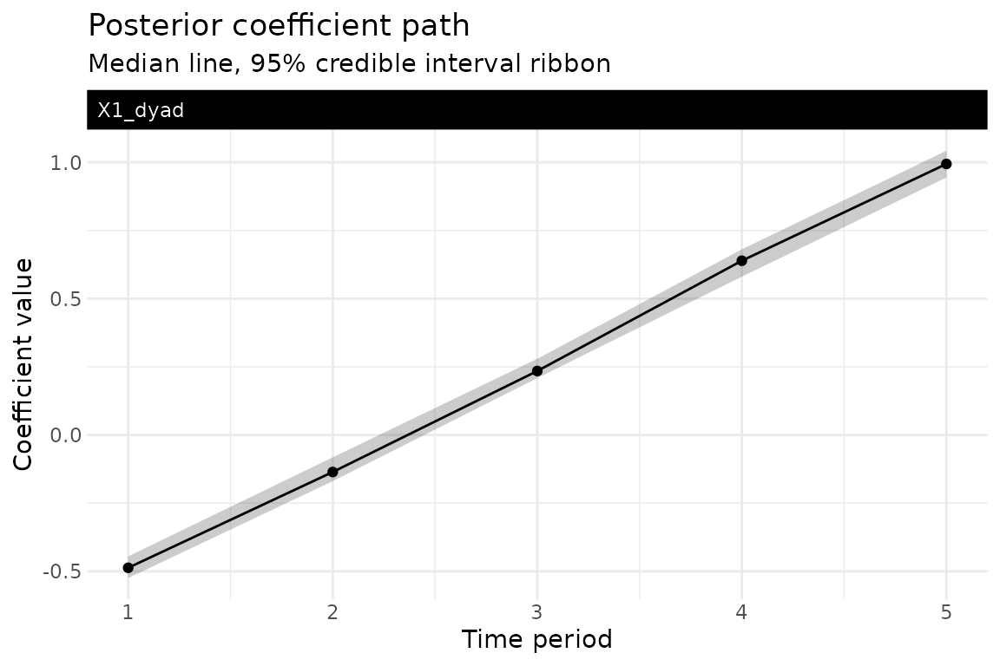
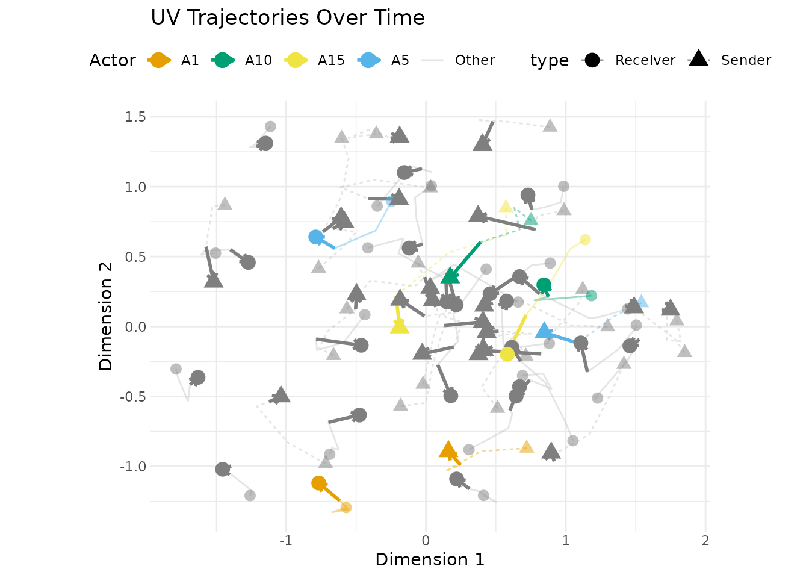
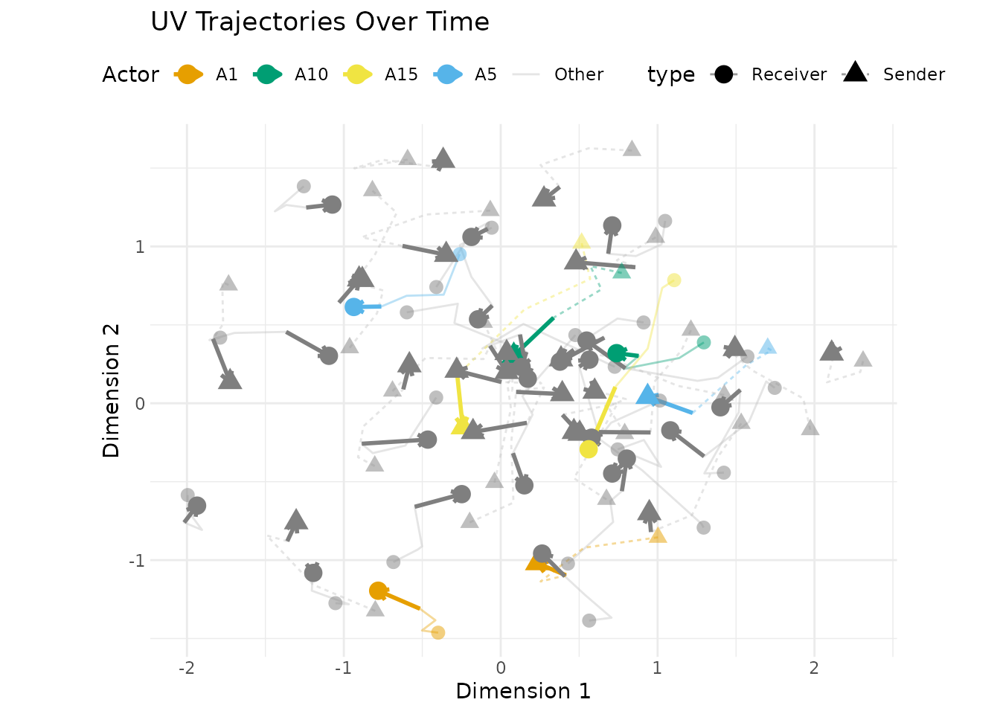
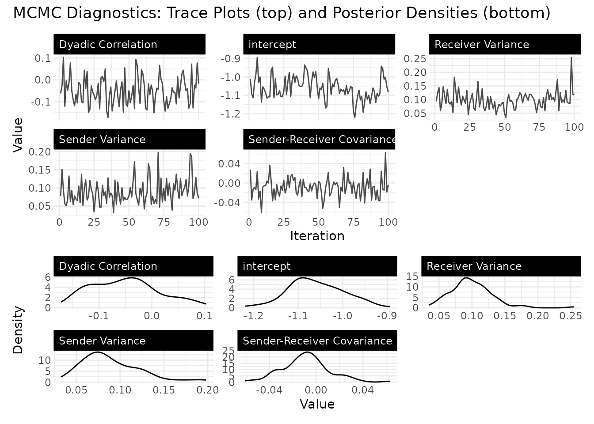
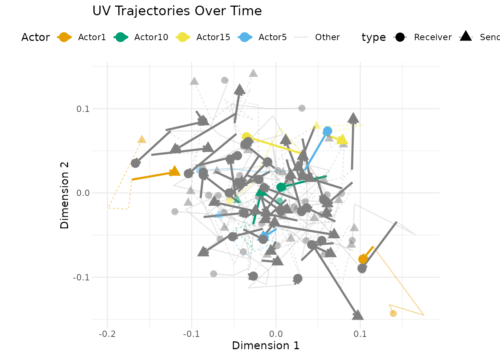
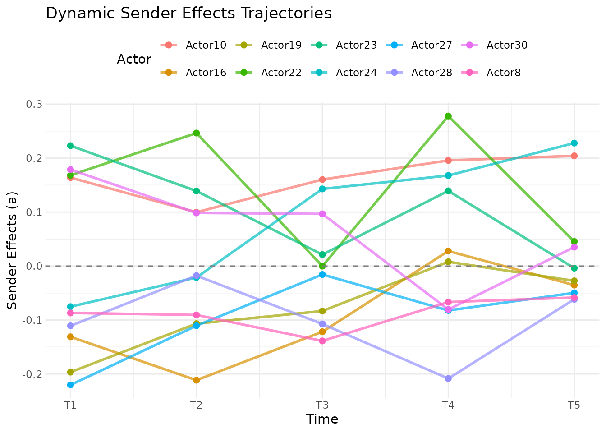

Dynamic Effects in Longitudinal AME Models
Cassy Dorff, Tosin Salau, Shahryar Minhas
2026-06-25
Source:vignettes/dynamic_effects.Rmd
dynamic_effects.RmdIntroduction
Networks change. Countries that were close allies a decade ago may have drifted apart. A legislator’s co-sponsorship patterns shift as they gain seniority or switch committee assignments. A user’s purchasing habits evolve as their tastes change.
The standard AME model assumes that each actor has a fixed latent
position and fixed additive effects across all time periods. This is a
reasonable starting point (pooling across time gives you more data and
more precise estimates), but it can miss important dynamics. The
lame package provides two mechanisms for letting the model
capture temporal change: dynamic_uv for time-varying latent
positions and dynamic_ab for time-varying additive
effects.
This vignette explains what these options do, when to use them, and how to interpret the results.
What Are Dynamic Effects?
The Static Baseline
In the standard AME model for longitudinal data, the tie between actors and at time is:
The covariates () can vary over time, but everything else (the sender effect , the receiver effect , and the latent positions and ) is constant. This means the model assumes that a country’s tendency to sanction others, or its position in the latent “sanctioning space,” is the same in 1993 as in 2000.
Dynamic Latent Positions (dynamic_uv = TRUE)
When you set dynamic_uv = TRUE, each actor’s latent
position evolves over time according to an AR(1) process:
Note the innovation parameterisation and
the storage convention. The symbol
is the variance of the period-to-period innovation
,
not the marginal/stationary variance of
— and the on-fit field fit$sigma_uv holds the per-iteration
posterior draws of the innovation standard deviation
(so mean(fit$sigma_uv) is the posterior-mean SD and
mean(fit$sigma_uv)^2 recovers the innovation variance).
Under the stationary AR(1), the implied marginal variance is
.
This matters when simulation code supplies an SD to rnorm()
in the recurrence: using the marginal SD makes the process too
variable by a factor of
.
The autoregressive parameter
controls how persistent the positions are. A value close to 1 means
positions change slowly, as last year’s position is a strong predictor
of this year’s. A value close to 0 means positions are essentially
re-drawn each period. In practice,
is estimated from the data.
This is useful when you believe the underlying community structure is evolving: alliances shift, social groups re-form, trading blocs realign.
Dynamic Additive Effects (dynamic_ab = TRUE)
When you set dynamic_ab = TRUE, the sender and receiver
effects evolve over time:
The same innovation parameterisation applies as for
dynamic_uv:
is the innovation variance, and fit$sigma_ab holds
the posterior draws of the innovation standard deviation
(square the posterior mean to get the innovation variance); the implied
stationary marginal variance is
.
The sampler in sample_dynamic_ab_cpp uses the stationary
distribution
as the prior on the initial state
— i.e. the
prior precision is
rather than the one-step innovation precision
— and then runs a single-pass Gibbs sweep across
in which the interior full conditional combines both the AR(1) look-back
from
and the look-ahead from
(a smoothing-style update), reducing to the look-back alone at
.
Substantively, dynamic_ab captures changes in actors’
overall activity levels. A country might become a more active sanctioner
after a change in government. A student might become more or less
socially active across semesters. These are changes in how much an actor
participates, not in who they connect with (that’s what
dynamic_uv captures).
You can use either option alone or combine them. In practice,
dynamic_ab is often a good place to start, since changes in
overall activity are common and relatively easy to estimate.
dynamic_uv adds more flexibility but also more
parameters.
Dynamic Regression Coefficients (dynamic_beta)
The third dynamic option lets the regression coefficients themselves
evolve over time. When you set dynamic_beta = TRUE (or pass
a subset like dynamic_beta = "dyad" to make only the dyadic
coefficients dynamic), each selected coefficient follows an independent
AR(1):
where
is the block of coefficient
(intercept / dyad / row / col), so all coefficients in the same block
share the AR(1) persistence
and innovation scale
.
The diagonal matrix
is a per-coefficient scale built once from the (period-averaged) design
XtX so that the innovation variance for coefficient
is commensurate with the data-level information about
(a
-prior
analogue; see build_beta_state_scales() in the source); by
construction
is diagonal, so the innovations are independent within a block. The
package draws the entire time path of
jointly via forward-filter / backward-sample (FFBS; Carter & Kohn
1994, Frühwirth-Schnatter 1994), the efficient state-space sampler for
conditionally-Gaussian dynamic linear models. The per-block quantity is
an innovation SD
(not a variance); the conditional variance of the innovation for
coefficient
is
.
Note a storage difference from
dynamic_uv/dynamic_ab:
fit$sigma_beta and fit$rho_beta hold the
last-iteration scalars, while the full posterior draws
live in fit$SIGMA_BETA and fit$RHO_BETA –
summarise those (e.g. colMeans(fit$SIGMA_BETA)), do not
square the last-iteration fit$sigma_beta.
This is useful when you believe a covariate’s effect changes over
time: maybe trade increases the probability of cooperation more strongly
during a recession, or a peer’s behavior matters more in certain
semesters. The dynamic-coefficient path is reported in
coef(fit) as a p x T matrix, and the
per-period 95% CIs are available via confint(fit).
You can pass dynamic_beta in five forms:
-
FALSE(default): every coefficient is static. -
TRUE: every coefficient becomes dynamic. - character vector of block shortcuts:
"intercept","dyad","row","col", or any coefficient name fromcolnames(fit$BETA). - integer vector: column indices into the BETA layout.
- logical vector of length
p: per-coefficient mask.
When the intercept (or a nodal coefficient) is included in
dynamic_beta, the additive-effects sampler imposes a
sum-to-zero constraint on a (and b) so that
the intercept and the additive effects remain jointly identified. This
happens automatically.
The AR(1) hyperparameters and have their own priors:
You can override these via
prior = list(rho_beta_mean = ..., rho_beta_sd = ..., sigma_beta_shape = ..., sigma_beta_scale = ...).
A worked dynamic_beta example
Simulate a small longitudinal network where a single dyadic
covariate’s effect grows linearly over time, and fit with
dynamic_beta = "dyad".
library(lame)
set.seed(2026)
n_db <- 15
T_db <- 5
beta_t_true <- seq(-0.5, 1.0, length.out = T_db) # truth: rising effect
X_db <- replicate(T_db, matrix(rnorm(n_db * n_db), n_db, n_db), simplify = FALSE)
Y_db <- vector("list", T_db)
for (t in seq_len(T_db)) {
Yt <- beta_t_true[t] * X_db[[t]] + matrix(rnorm(n_db * n_db, 0, 0.4), n_db, n_db)
diag(Yt) <- NA
rownames(Yt) <- colnames(Yt) <- paste0("a", seq_len(n_db))
Y_db[[t]] <- Yt
}
names(Y_db) <- paste0("t", seq_len(T_db))
X_db_arr <- lapply(X_db, function(x) array(x, c(n_db, n_db, 1)))
fit_db <- lame(Y_db, Xdyad = X_db_arr,
family = "normal", R = 0,
nscan = 200, burn = 50, odens = 5,
dynamic_beta = "dyad", verbose = FALSE)
# fit$BETA is a 3-D array [n_stored x p x T]
dim(fit_db$BETA)
#> [1] 40 2 5
# coef() returns a p x T matrix of posterior means
coef(fit_db)
#> t1 t2 t3 t4 t5
#> intercept -0.008086411 -0.008086411 -0.008086411 -0.008086411 -0.008086411
#> X1_dyad -0.475585012 -0.126231558 0.229613231 0.625957779 0.997500052
# confint() returns one row per coef[t] with 95% credible interval
head(confint(fit_db), 8)
#> 2.5% 97.5%
#> intercept[t1] -0.02780649 0.006971105
#> X1_dyad[t1] -0.54245212 -0.431430480
#> intercept[t2] -0.02780649 0.006971105
#> X1_dyad[t2] -0.17701452 -0.058029030
#> intercept[t3] -0.02780649 0.006971105
#> X1_dyad[t3] 0.17688772 0.287365069
#> intercept[t4] -0.02780649 0.006971105
#> X1_dyad[t4] 0.56717597 0.672599139Migration warning for amen /
static-lame users. Under amen::ame()
and any static lame fit, fit$BETA is a 2-D
[n_stored, p] matrix and
apply(fit$BETA, 2, mean) gives the posterior mean per
coefficient. When dynamic_beta is active,
fit$BETA becomes a 3-D [n_stored, p, T] array.
The second margin is still the coefficient index in both shapes, so
apply(fit$BETA, 2, mean) still returns a
length-p vector and looks superficially correct, but it now
silently averages across both iterations and time
periods. The call does not error, the output length matches what the old
code expected, and the silent collapse can survive into downstream plots
as a single “average effect” that hides any time variation the user was
trying to recover. Two safe patterns:
# check the shape before summarising coefficients
if (length(dim(fit_db$BETA)) == 3L) {
# 3-D: take posterior mean over the iteration margin -> [p, T]
pm <- apply(fit_db$BETA, c(2, 3), mean)
} else {
# 2-D amen-style fit
pm <- apply(fit_db$BETA, 2, mean)
}
# or just use coef(), which returns a [p, T] matrix for dynamic fits
# and a length-p vector for static fits -- no shape sniffing required
coef(fit_db)The per-period posterior mean for X1_dyad should track
the linear ramp
beta_t_true = c(-0.5, -0.125, 0.25, 0.625, 1.0). The AR(1)
prior provides mild shrinkage that reduces the per-period variance
compared to fitting a separate ame() per period.
summary(fit_db) prints a Dynamic coefficients per
period block with per-coefficient
Mean | Min | Max | Drift_pct | Dynamic columns; the
Drift_pct is 100 * (Max - Min) / |Mean|,
useful for spotting which coefficients move the most across periods.
Choosing a prior family: dynamic_beta_kind
lame() exposes a stable argument
dynamic_beta_kind for selecting the prior family on the
time-varying coefficients. In this release the full decision
tree is:
Mean-reverting coefficient? Use the default
dynamic_beta_kind = "ar1". Permanent / unit-root drift (no mean reversion)? Usedynamic_beta_kind = "rw1". Smooth with curvature (acceleration matters; second-order smoothness)? Usedynamic_beta_kind = "rw2". Smooth with a known length-scale of variation? Usedynamic_beta_kind = "matern32"(set the length scale viaprior = list(matern32_length_scale = ...); defaults tomax(2, T/4)). If the stationarity warning fires after fitting AR(1), meaning the posterior on is concentrated at or above 0.97, refit with"rw1"(or"rw2"if acceleration matters).
"random_walk" is accepted as an alias for
"rw1". The "rw2" and "matern32"
samplers use an R-level joint Gaussian update (slower than the C++ FFBS
used for "ar1" / "rw1", but produces full
posterior draws and works on any T).
The same fit_db setup above can be refit under each
kind. Each call swaps only the dynamic_beta_kind argument;
coef() returns the same p x T matrix
regardless.
# rw1: random walk, rho pinned at 1
fit_rw1 <- lame(Y_db, Xdyad = X_db_arr, family = "normal", R = 0,
nscan = 200, burn = 50, odens = 5,
dynamic_beta = "dyad", dynamic_beta_kind = "rw1",
verbose = FALSE)
round(coef(fit_rw1), 3)
#> t1 t2 t3 t4 t5
#> intercept -0.006 -0.006 -0.006 -0.006 -0.006
#> X1_dyad -0.478 -0.122 0.223 0.627 0.988
# rw2: smooth with curvature
fit_rw2 <- lame(Y_db, Xdyad = X_db_arr, family = "normal", R = 0,
nscan = 200, burn = 50, odens = 5,
dynamic_beta = "dyad", dynamic_beta_kind = "rw2",
verbose = FALSE)
round(coef(fit_rw2), 3)
#> t1 t2 t3 t4 t5
#> intercept -0.007 -0.007 -0.007 -0.007 -0.007
#> X1_dyad -0.480 -0.130 0.232 0.624 1.001
# matern 3/2: smooth gp with a length-scale knob
fit_m32 <- lame(Y_db, Xdyad = X_db_arr, family = "normal", R = 0,
nscan = 200, burn = 50, odens = 5,
dynamic_beta = "dyad", dynamic_beta_kind = "matern32",
prior = list(matern32_length_scale = 2),
verbose = FALSE)
round(coef(fit_m32), 3)
#> t1 t2 t3 t4 t5
#> intercept -0.007 -0.007 -0.007 -0.007 -0.007
#> X1_dyad -0.476 -0.132 0.232 0.627 0.993When time_index is supplied with unequal gaps, the AR(1)
/ RW1 conditional variance is automatically scaled by the gap (the
per-coefficient diagonal entry, suppressing
for readability):
so quarterly-then-annual data, for example, gets the correct prior. The
full diagonal entry is
;
the
factor is the same period-invariant per-coefficient scale used in the
equal-gap case. Equal-gap time_index is byte-identical to
leaving it unspecified. For dynamic_beta_kind = "rw2" and
"matern32", time_index is consumed by the
joint precision-matrix construction (RW2 uses the second-difference
operator on the supplied positions; Matern 3/2 uses the continuous-time
kernel
),
so unequal-gap support is uniform across kinds even though the
closed-form
above is the AR(1)/RW1 case.
# observations at t = 1, 2, 4, 8 (a doubling gap structure)
fit_gaps <- lame(Y_db, Xdyad = X_db_arr, family = "normal", R = 0,
nscan = 200, burn = 50, odens = 5,
dynamic_beta = "dyad",
time_index = c(1, 2, 4, 8, 16)[seq_len(T_db)],
verbose = FALSE)
fit_gaps$time_index
#> [1] 1 2 4 8 16
round(coef(fit_gaps), 3)
#> t1 t2 t3 t4 t5
#> intercept -0.009 -0.009 -0.009 -0.009 -0.009
#> X1_dyad -0.477 -0.126 0.230 0.627 0.996Hierarchical pooling: dynamic_beta_pool
When multiple coefficient blocks are dynamic (intercept / dyad / row
/ col), each block has its own AR(1) hyperparameters
by default, and short panels (small
)
can leave one block’s hyperparameters badly under-identified.
dynamic_beta_pool adds a hierarchical layer that shrinks
block-level hyperparameters toward a shared mean: use "rho"
when you want blocks to share a common persistence (you believe
e.g. dyadic and nodal coefficients all drift at similar speed but the
data alone can’t pin each
down), "sigma" when blocks should share an innovation scale
(a common case when blocks were standardised consistently), and
"both" when you want full hierarchical pooling. The default
"none" leaves each block independent. Pooling is
implemented as a hierarchical MH step on the block-level hyperpriors and
is most valuable for
panels where the per-block posteriors otherwise collapse to their
priors.
fit_pool <- lame(Y_db, Xdyad = X_db_arr, family = "normal", R = 0,
nscan = 200, burn = 50, odens = 5,
dynamic_beta = "dyad", dynamic_beta_pool = "both",
verbose = FALSE)
fit_pool$dynamic_beta_pool
#> [1] "both"Diagnostic check. With pooling on, compare the per-block posterior dispersion of
(rho_beta, sigma_beta)against an identical fit withdynamic_beta_pool = "none". For the pooling layer to be doing useful work the between-block sd-of-means should shrink under"both"relative to"none". On very short panels with only a single dynamic block (dynamic_beta = "dyad"alone) the hierarchical layer has no other blocks to borrow strength from, and the pooled fit can actually look noisier inRHO_BETAbecause the hyperprior is then a near-flat mixing distribution over a single posterior draw; pooling earns its keep when two or more blocks (e.g.dynamic_beta = c("intercept", "dyad", "row", "col")) are dynamic at once.
Per-actor time-varying slopes:
dynamic_beta_per_actor
For research questions that ask whether one actor responds to a
covariate differently than another, and whether that gap evolves,
set dynamic_beta_per_actor = "row" (or "col")
and choose the relevant covariate via
per_actor_covariate_idx. The sampler imposes a per-period
sum-to-zero constraint on the per-actor deviations, so the population
coefficient remains in coef(fit) and the deviations are
stored in fit$THETA_ACTOR (a
n_iter x n_actors x T array under the default
keep_per_actor = "auto").
fit_pa <- lame(Y_db, Xdyad = X_db_arr, family = "normal", R = 0,
dynamic_beta_per_actor = "row",
per_actor_covariate_idx = 1L,
keep_per_actor = "summary",
nscan = 200, burn = 50, odens = 5, verbose = FALSE)
str(fit_pa$theta_actor_mean) # n_actors x T posterior-mean deviations
# check the per-period sum-to-zero constraint
colSums(fit_pa$theta_actor_mean) # ~ 0 0 0 0 0Known dimnames gap.
theta_actor_meanis currently returned withoutrownames()/colnames()even when the inputYhas actor names and named periods. If you need labelled output, attach them manually after the fit using whatever object on the fit still carries the labels, e.g.dimnames(fit_pa$theta_actor_mean) <- list(rownames(fit_pa$YPM[[1]]), names(fit_pa$YPM)). The sum-to-zero identifiability constraint (per_actor_identifiability = "center", the default) is enforced exactly:colSums(fit_pa$theta_actor_mean)is numerically zero at every period.
Diagnosing your dynamic fit
After fitting, two helpers summarize the coefficient path:
-
summary(fit): prints the Dynamic coefficients per period block (mentioned above) and the per-block posterior-meanrho_beta. The stationarity warning fires when, for any block, the 5th percentile of the posterior on is and the IQR is below 0.1 — that is, at least 95% of the posterior mass sits above 0.97 with little spread. The print method then recommends switching todynamic_beta_kind = "rw1". The companion forecast warning (next section) uses a complementary trigger: the upper bound of the central 95% credible interval reaching 0.99. -
detect_change_point(fit, threshold_bf = 5): heuristic regime-switch diagnostic. Computes the maximum first-difference scaled by , compares it to a prior-null reference built by resampling from the posterior, and reports a tail-ratio score in the historicalbfcolumn. Large values (≥5) flag coefficients with abrupt breaks. This is a heuristic diagnostic, not a marginal-likelihood Bayes factor.
Worked example on the simulated linear-ramp data above (no real break is present, so we expect modest scores):
detect_change_point(fit_db, threshold_bf = 5)
#> coef bf m_post_mean m_prior_q95 t_hat warn
#> 1 X1_dyad 0 0.7085288 2.814472 4 FALSEEach row reports the largest one-period change for one coefficient,
the tail-ratio score, and a flag. The diagnostic is deliberately
conservative: it fires only when a jump is large relative to what
the AR(1) prior can absorb. A modest planted break such as
beta_t_true = c(rep(-0.5, 3), rep(1.0, 2)) does
not reliably trip it: at
the score is small and noisy run to run (often 0-2, occasionally
clearing the threshold of 5), because the sampler can widen
to absorb a single step. Only a stark break
(e.g. c(rep(-2, 3), rep(2, 2))) pushes the scaled
first-difference reliably past the prior reference (scores roughly 6-16
across runs, always clearing the threshold of 5). On the smooth linear
ramp here the score is 0, as expected for a process with no abrupt
jump.
Interpret the bf column as a bounded tail-ratio score:
values below 3 are weak, values from 3 to 10 suggest a jump worth
inspecting, and values above 10 indicate a jump the AR(1) prior has
difficulty generating. The construction is
bf = Pr(M_post > m_star) / 0.05, where
m_star is the 95% quantile of the prior null, so the score
is bounded above by 20. A value at or near 20 means the
posterior path almost never looks as smooth as the prior reference, not
that a separate change-point model has a formal Bayes factor of 20. The
t_hat column points to where the largest scaled
jump sits in posterior; treat it as a flag for visual inspection of the
coefficient trajectory, not a formal break-time estimate. With very
short panels, the score can be unstable run to run.
For prior elicitation before fitting, see
dynamic_beta_prior_summary(T = 10, kind = "ar1", rho_mean = 0.8, rho_sd = 0.15).
It simulates paths from the prior so you can check the implied max
first-difference, roughness, range, and trend correlation distributions
for your chosen T.
Temporal-trend posterior-predictive check:
gof_temporal()
The change-point diagnostic targets coefficients; the
temporal-trend posterior-predictive check targets the network
statistic itself. gof_temporal() fits a linear time
trend to a chosen network statistic (density / mean / reciprocity /
transitivity), computes the same slope on every
simulate(fit) replicate, and returns a two-sided
Gelman-style posterior-predictive p-value,
p_pp = 2 * min(p_up, 1 - p_up). This runs from 0 (observed
slope in the extreme tail) to 1 (observed slope dead-centre). The print
method’s reading: small p_pp (below 0.05) means the
observed temporal trend is incompatible with the fitted model;
a large p_pp (toward 1) means the observed trend is
well covered by the predictive distribution.
gof_temporal(fit_db, stat = "mean", n_rep = 200, seed = 1)
#>
#> ── Temporal-trend posterior-predictive check ──
#>
#> • Statistic: "mean"
#> • Observed slope (per-period): 0.00534
#> • Replicates: 200
#> • Posterior-predictive p-value (two-sided): 0.83
#> Observed temporal trend is well covered by the fitted model.What is this telling us? stat = "mean" tracks the
average edge weight across the network each period. In this simulation
the dyadic covariate is zero-mean, so
averages to roughly zero regardless of how
moves: the network mean has essentially no trend (its observed
per-period slope is near 0). The high p_pp therefore
confirms only that the fit reproduces a flat statistic; it is
not a verdict on the (real, rising) trend in the
coefficient. This is the key distinction from the change-point
diagnostic above: gof_temporal() tests trends in a
network statistic, while detect_change_point() and
the per-period coef(fit) test trends in a
coefficient. A static-beta fit also returns a high
(well-covered) p_pp here, for the same reason – there is no
trend in the network mean for either model to miss.
gof_temporal() earns its keep when the substantive
statistic itself drifts – a network whose density or reciprocity climbs
over time. There a static fit that cannot track the drift lands
p_pp near 0, and the printed “incompatible” verdict points
toward dynamic_beta (or dynamic_ab /
dynamic_uv) when interpreting time-averaged summaries. To
probe whether a coefficient trends, use the per-period
coef(fit), the change-point diagnostic, or a
static-vs-dynamic LOO comparison.
Inspecting the priors actually in effect:
prior_summary()
Modelled on rstanarm::prior_summary(),
prior_summary(fit) prints the hyperparameters that were
actually used (defaults filled in) for the AR(1) coefficient
block, the variance components, and the g-prior on beta.
Always run it once per fit; it is the cheapest way to catch a typo in a
prior = list(...) override.
prior_summary(fit_db)
#>
#> ── Priors in effect (lame fit) ──
#>
#> Regression coefficients: `beta ~ N(0, g * sigma^2 * (X'X)^-1)` (g-prior).
#> `g` (vector, top-level argument) = "225, 225"
#> Note: `g` is set at top level on `lame()` -- not inside `prior = list(...)`.
#> `Sab0` = "matrix(1, 0, 0, 1)"
#> `eta0` = "4"
#> `etaab` = "4"
#>
#> ── Dynamic AR(1) priors
#> `rho_beta_mean` = 0.8
#> `rho_beta_sd` = 0.15
#> `sigma_beta_shape` = 2
#> `sigma_beta_scale` = 1
#> `sigma_beta_init` = 0.25
#> `rho_beta_lower` = 0
#> `rho_beta_upper` = 0.999Multi-chain
via lame_parallel() and
rhat_dynamic_beta()
A single chain only ever buys you within-chain
split-.
For a between-chain diagnostic on the per-period coefficient path, run
four parallel chains with different seeds and call
rhat_dynamic_beta() on the per-chain fit list:
fit_list_db <- lame_parallel(
Y_db, Xdyad = X_db_arr,
family = "normal", R = 0,
nscan = 200, burn = 50, odens = 5,
dynamic_beta = "dyad",
n_chains = 4, cores = 1, # cores = 1 keeps the vignette portable
combine_method = "list", # one fit per chain
verbose = FALSE
)
#>
#> ── Running 4 chains sequentially ──
#>
#> Starting chain 1 (`lame()`)
#> Completed chain 1
#> Starting chain 2 (`lame()`)
#> Completed chain 2
#> Starting chain 3 (`lame()`)
#> Completed chain 3
#> Starting chain 4 (`lame()`)
#> Completed chain 4
# multivariate (Brooks-Gelman) Rhat per coefficient on the length-T path,
# alongside the max univariate split-Rhat over the T per-period scalars.
rhat_dynamic_beta(fit_list_db)
#> coef rhat_mvt rhat_max_univariate n_chains n_iter_per_chain T
#> 1 intercept 0.9989955 0.9913762 4 40 5
#> 2 X1_dyad 1.0475509 1.0206500 4 40 5
# the pooled fit also routes through posterior::as_draws() with per-period
# coefficients flattened to "coef[t]" variable names, so summarise_draws()
# gives you ess_bulk / ess_tail per (coef, period).
fit_pool_db <- combine_ame_chains(fit_list_db)
#>
#> ── MCMC Convergence Diagnostics
#> Number of chains: 4
#> Samples per chain: "400, 400, 400, 400"
#> Diagnostics cover regression coefficients and variance components.
#> ✔ All parameters converged (R-hat < 1.1)
posterior::summarise_draws(posterior::as_draws(fit_pool_db))
#> # A tibble: 15 × 10
#> variable mean median sd mad q5 q95 rhat ess_bulk
#> <chr> <dbl> <dbl> <dbl> <dbl> <dbl> <dbl> <dbl> <dbl>
#> 1 intercept[… -0.0117 -0.0108 0.0121 0.0122 -0.0313 0.00906 1.00 168.
#> 2 X1_dyad[t1] -0.486 -0.484 0.0304 0.0293 -0.535 -0.437 0.995 212.
#> 3 intercept[… -0.0117 -0.0108 0.0121 0.0122 -0.0313 0.00906 1.00 168.
#> 4 X1_dyad[t2] -0.121 -0.117 0.0259 0.0280 -0.165 -0.0804 1.02 148.
#> 5 intercept[… -0.0117 -0.0108 0.0121 0.0122 -0.0313 0.00906 1.00 168.
#> 6 X1_dyad[t3] 0.226 0.226 0.0275 0.0274 0.183 0.270 1.01 178.
#> 7 intercept[… -0.0117 -0.0108 0.0121 0.0122 -0.0313 0.00906 1.00 168.
#> 8 X1_dyad[t4] 0.635 0.638 0.0270 0.0272 0.588 0.676 1.00 174.
#> 9 intercept[… -0.0117 -0.0108 0.0121 0.0122 -0.0313 0.00906 1.00 168.
#> 10 X1_dyad[t5] 0.993 0.995 0.0269 0.0263 0.947 1.03 1.01 190.
#> 11 va 0.0645 0.0620 0.0230 0.0179 0.0341 0.101 0.993 200.
#> 12 cab 0.00256 0.00176 0.0168 0.0147 -0.0255 0.0321 1.00 104.
#> 13 vb 0.0657 0.0618 0.0215 0.0173 0.0365 0.104 1.01 157.
#> 14 rho -0.0274 -0.0284 0.0427 0.0388 -0.0927 0.0475 0.999 166.
#> 15 ve 0.151 0.151 0.00630 0.00559 0.141 0.162 0.997 187.
#> # ℹ 1 more variable: ess_tail <dbl>Use rhat_mvt < 1.01 and
rhat_max_univariate < 1.01 as the joint pass condition
for the path. The univariate column is what you compare against the
Stan-era 1.01 threshold per scalar; the multivariate column catches the
case where individual periods look fine but the trajectory
disagrees across chains.
Sampler-failure diagnostics (the Gibbs analog of HMC divergences)
The lame sampler is Gibbs / Metropolis-Hastings, not
HMC, so it does not produce HMC-style divergences. The closest analog is
the per-block Metropolis acceptance / tryError count, which
is exposed on every fit as fit$mh_counters (alias
fit$tryErrorChecks). A post-MCMC warning fires
automatically when any block exceeds a 10% failure rate; for routine
reporting:
# per-block failure counts and acceptance proxies for the just-fit chain
str(fit_db$mh_counters)Treat any block with >5% failures as suspicious;
combine that with the rhat_dynamic_beta() and
summarise_draws() output above for a full diagnostic pass.
Pairing ess_bulk / ess_tail from
summarise_draws() with the mh_counters totals
gives you the Gibbs-side equivalent of the Stan diagnostic triple
(R-hat, ESS, divergences).
Forecasting
When at least one dynamic component is active,
predict(fit, h = K) propagates the AR(1) / RW1 state-space
model forward
periods and returns a list of
matrices (one per future period). The propagation samples
from the posterior at each draw, so the resulting forecast accounts for
hyperparameter uncertainty.
# h = 3-step forecast on the link scale
fc_link <- predict(fit_db, h = 3, type = "link")
#> Warning: ! Posterior 95% interval for `rho_beta` reaches 0.998.
#> ℹ Under AR(1) the `h`-step forecast variance saturates at the stationary level
#> `sigma_beta^2 / (1 - rho_beta^2)`, which itself explodes as `rho_beta -> 1`;
#> horizons beyond "3" become uninformative in this regime.
#> ℹ Consider refitting with `dynamic_beta_kind = "rw1"` if the underlying process
#> is genuinely unit-root.
length(fc_link) # 3 (one matrix per future period)
#> [1] 3
dim(fc_link[[1]]) # n x n
#> [1] 15 15
# response scale applies the family inverse link per draw
fc_resp <- predict(fit_db, h = 3, type = "response")
# by_draw = TRUE returns an [n, n, h, n_draws] array of per-draw forecasts
fc_full <- predict(fit_db, h = 3, type = "response", by_draw = TRUE)
dim(fc_full) # n x n x 3 x n_draws
#> [1] 15 15 3 40
# interval = "credible" returns lower / median / upper per horizon
fc_ci <- predict(fit_db, h = 3, type = "response", interval = "credible")
str(fc_ci[[1]]) # list($lower, $median, $upper)
#> List of 3
#> $ lower : num [1:15, 1:15] -0.1042 -2.3041 -0.3186 -0.7478 -0.0547 ...
#> $ median: num [1:15, 1:15] 0.178 -1.089 0.991 -0.355 0.277 ...
#> $ upper : num [1:15, 1:15] 0.396 0.403 2.048 0.129 0.536 ...Forecast variance behavior depends on dynamic_beta_kind.
For AR(1) with
the
-step
conditional variance is
and saturates at the stationary variance
as
.
The saturation level itself explodes as
,
so AR(1) forecasts beyond a few periods become uninformative in that
regime even though the variance technically converges. For RW1 (the
unit-root case) the variance grows exactly linearly in
,
contributing
per step (so the
-step
conditional variance from the RW1 piece alone is
,
with no saturation). predict() emits a one-per-fit warning
when the upper bound of the central 95% posterior
credible interval for
reaches 0.99 (i.e. quantile(RHO_BETA, 0.975) >= 0.99);
note this 0.99 forecast trigger is intentionally higher than the 0.97
stationarity flag used by summary(fit). In that regime,
prefer dynamic_beta_kind = "rw1" if the underlying process
is genuinely non-stationary, and treat horizons beyond
cautiously in either case. Forecasting under "rw2"
/ "matern32" is supported but currently uses the same AR(1)
forward recursion with
pinned at 1 (since neither prior identifies an AR(1) persistence), so
the forecast variance grows linearly in
just like RW1; the smoothing or length-scale structure of these priors
informs the posterior path of
in-sample but does not shape the out-of-sample propagation.
The predict() warning copy is kind-aware: AR(1) reports
the stationary-variance saturation explosion as
,
RW1 / RW2 / Matern 3/2 report the linear variance growth, and the “refit
with dynamic_beta_kind = \"rw1\"” suggestion is only
printed under AR(1) (so it does not nag a user who is already on the
unit-root branch).
You can pass newdata = list_of_future_X_arrays to
combine counterfactual future covariates with the forecast (one
array per future period).
For family = "poisson" fits that supplied
period_exposure at fit time, the future-period exposure is
passed through predict(..., newexposure = ...). The
forecast multiplies
by newexposure[k] at horizon
,
so the response-scale matrix is reported in the same units as the
original Y. If newexposure is omitted, the
forecast reuses the last observed period_exposure value
(and falls back to 1 for fits that did not use exposure offsets).
Visualising the coefficient path: autoplot.lame
For a fit with dynamic_beta active,
autoplot(fit) returns a ggplot with a ribbon
plot per coefficient (posterior median line, 95% interval ribbon,
faceted by coefficient). The S3 method is registered against
ggplot2::autoplot so plain autoplot(fit)
dispatches when ggplot2 is loaded.
library(ggplot2)
autoplot(fit_db, probs = c(0.025, 0.5, 0.975)) +
labs(title = "Posterior coefficient paths",
subtitle = "Median line, 95% credible interval ribbon",
x = "Time period", y = "Coefficient value")
LOO / WAIC via save_log_lik = TRUE
Pass save_log_lik = TRUE and lame attaches
a [n_stored, n_obs] pointwise log-likelihood matrix to
fit$log_lik. From there, loo::loo(fit) and
loo::waic(fit) work directly because the package registers
S3 methods that hand the stored matrix to
loo::loo.matrix():
fit_ll <- lame(Y_db, Xdyad = X_db_arr, family = "normal", R = 0,
nscan = 200, burn = 50, odens = 5,
dynamic_beta = "dyad",
save_log_lik = TRUE,
verbose = FALSE)
dim(fit_ll$log_lik) # [n_stored, n_observations]
#> [1] 40 1050
loo_db <- loo::loo(fit_ll)
#> Warning: Some Pareto k diagnostic values are too high. See help('pareto-k-diagnostic') for details.
print(loo_db)
#>
#> Computed from 40 by 1050 log-likelihood matrix.
#>
#> Estimate SE
#> elpd_loo -511.8 22.6
#> p_loo 33.6 1.5
#> looic 1023.5 45.1
#> ------
#> MCSE of elpd_loo is NA.
#> MCSE and ESS estimates assume independent draws (r_eff=1).
#>
#> Pareto k diagnostic values:
#> Count Pct. Min. ESS
#> (-Inf, 0.38] (good) 671 63.9% 27
#> (0.38, 1] (bad) 370 35.2% <NA>
#> (1, Inf) (very bad) 9 0.9% <NA>
#> See help('pareto-k-diagnostic') for details.One important detail for cross-software comparisons. For six families
– normal, binary, cbin,
tobit, poisson, ordinal – the
stored pointwise log-likelihood is the exact family-specific Y
density on the response scale (Gaussian density for
normal, probit Bernoulli log-pmf for
binary/cbin, censored-Gaussian for
tobit, log-Poisson for poisson, and the
cumulative-probit log-pmf for ordinal). For these six,
elpd_loo is directly comparable to a loo()
result from a Stan / brms fit to the same family on the same data,
modulo the lame Gibbs sampler’s
and ESS being satisfactory. For the two rank likelihoods
frn and rrl, the exact marginal needs GHK
Monte Carlo and is currently only available on the longitudinal path via
log_lik_method = "observed_ghk"; the default
observed_exact for those two families falls back to the
augmented-Z normal density and emits a one-time warning. Inspect
fit$log_lik_method on any fit to see which branch was
used.
Memory-conscious variant: save_log_lik = "chunked"
If the per-iteration log-likelihood matrix would exceed RAM (large
n_stored x n_obs), pass
save_log_lik = "chunked" instead to stream it to
per-column-chunk binary files. The chunks are recovered transparently
when you call loo(fit) (or directly via
read_log_lik(fit)). The on-disk layout is row-major within
each chunk so one readBin per chunk suffices.
Genuine Dynamics: What They Look Like
We start with an example where dynamics are truly present, so you can see what the model recovers when there is a real signal. We simulate 25 actors over 5 periods where each actor’s latent position evolves via an AR(1) process with and innovation SD (matching the innovation parameterisation the C++ sampler uses). Initial positions are drawn at SD 1.5, which is larger than the implied stationary SD . This seeds the simulation with strong latent structure that the AR(1) then drifts down toward stationarity, producing a network with realistic density (roughly 30%) after a negative intercept.
library(lame)
set.seed(6886)
n_dyn <- 25
n_per <- 5
R_dyn <- 2
# evolving latent positions with AR(1) dynamics
U <- matrix(rnorm(n_dyn * R_dyn, 0, 1.5), n_dyn, R_dyn)
V <- matrix(rnorm(n_dyn * R_dyn, 0, 1.5), n_dyn, R_dyn)
Y_dyn <- list()
for(t in 1:n_per) {
if(t > 1) {
U <- 0.85 * U + matrix(rnorm(n_dyn * R_dyn, 0, 0.3), n_dyn, R_dyn)
V <- 0.85 * V + matrix(rnorm(n_dyn * R_dyn, 0, 0.3), n_dyn, R_dyn)
}
eta <- -1 + U %*% t(V)
Y_t <- matrix(rbinom(n_dyn * n_dyn, 1, pnorm(eta)), n_dyn, n_dyn)
diag(Y_t) <- NA
rownames(Y_t) <- colnames(Y_t) <- paste0("A", 1:n_dyn)
Y_dyn[[t]] <- Y_t
}
# iterations are small so the vignette builds quickly
# use burn >= 1000 and nscan >= 5000 for real analyses.
fit_dyn_real <- lame(Y_dyn, R = 2,
dynamic_uv = TRUE, dynamic_ab = TRUE,
family = "binary",
burn = 100, nscan = 1000, odens = 10,
verbose = FALSE, plot = FALSE)
summary(fit_dyn_real)
#>
#> === Longitudinal AME Model Summary ===
#>
#> Call:
#> [1] "Y ~ a[i] + b[j] + rho*e[ji] + U[i,1:2] %*% V[j,1:2], family = 'binary'"
#>
#> Time periods: 5
#> Family: binary
#> Mode: unipartite
#> Dynamic latent positions: enabled (rho_uv = 0.85 )
#> Dynamic additive effects: enabled (rho_ab = 0.277 )
#>
#> Regression coefficients:
#> ------------------------
#> Estimate StdError z_value p_value CI_lower CI_upper
#> intercept -0.799 0.089 -8.951 0 -0.998 -0.627 ***
#> ---
#> Signif. codes: 0 '***' 0.001 '**' 0.01 '*' 0.05 '.' 0.1 ' ' 1
#> Note: stars are a visual hint from posterior mean / SD only; for inference use the credible intervals.
#>
#> Variance components:
#> -------------------
#> Estimate StdError
#> va 0.061 0.017
#> cab -0.005 0.013
#> vb 0.073 0.021
#> rho -0.013 0.067
#> ve 1.000 0.000
#> (va = sender, cab = sender-receiver covariance, vb = receiver,
#> rho = dyadic correlation, ve = residual variance)The trajectory plot shows how actors move through the latent space over time. With genuine temporal structure, the paths should show coherent movement rather than random jumping:
uv_plot(fit_dyn_real, plot_type = "trajectory")
With more than eight actors the trajectory legend becomes a rainbow
that loses meaning. Pass highlight = a small character
vector of actor names to grey out the rest and colour only the
highlighted set with the colour-blind-safe Okabe–Ito palette:

Always check convergence. Dynamic models have more parameters than static models, so adequate mixing is harder to achieve and requires longer chains:
trace_plot(fit_dyn_real)
What Happens Without Temporal Structure?
To understand how the dynamic model behaves when there is no signal,
we fit the same model to independent networks (no temporal correlation).
This is a useful null baseline: the estimated rho values
tell you what the prior alone produces when the data are
uninformative.
set.seed(6886)
n <- 30
n_periods <- 5
# independent binary networks with no temporal structure
Y_list <- list()
for(t in 1:n_periods) {
Y_t <- matrix(rbinom(n*n, 1, 0.2), n, n)
diag(Y_t) <- NA
rownames(Y_t) <- colnames(Y_t) <- paste0("Actor", 1:n)
Y_list[[t]] <- Y_t
}
# fit with a custom prior on rho_uv to illustrate prior sensitivity
prior_custom <- list(
rho_uv_mean = 0.95, # expect very slow change in latent positions
rho_uv_sd = 0.05 # tight prior
)
fit_null <- lame(
Y = Y_list,
R = 2,
dynamic_uv = TRUE,
dynamic_ab = TRUE,
family = "binary",
prior = prior_custom,
burn = 100,
nscan = 1000,
odens = 10,
verbose = FALSE,
plot = FALSE
)
summary(fit_null)
#>
#> === Longitudinal AME Model Summary ===
#>
#> Call:
#> [1] "Y ~ a[i] + b[j] + rho*e[ji] + U[i,1:2] %*% V[j,1:2], family = 'binary'"
#>
#> Time periods: 5
#> Family: binary
#> Mode: unipartite
#> Dynamic latent positions: enabled (rho_uv = 0.762 )
#> Dynamic additive effects: enabled (rho_ab = 0.279 )
#>
#> Regression coefficients:
#> ------------------------
#> Estimate StdError z_value p_value CI_lower CI_upper
#> intercept -0.889 0.066 -13.428 0 -1.023 -0.779 ***
#> ---
#> Signif. codes: 0 '***' 0.001 '**' 0.01 '*' 0.05 '.' 0.1 ' ' 1
#> Note: stars are a visual hint from posterior mean / SD only; for inference use the credible intervals.
#>
#> Variance components:
#> -------------------
#> Estimate StdError
#> va 0.053 0.014
#> cab 0.002 0.009
#> vb 0.055 0.017
#> rho 0.091 0.048
#> ve 1.000 0.000
#> (va = sender, cab = sender-receiver covariance, vb = receiver,
#> rho = dyadic correlation, ve = residual variance)We can compare the estimated persistence parameters across the two settings:
cat("Independent data rho_uv:", round(mean(fit_null$rho_uv), 3), "\n")
#> Independent data rho_uv: 0.762
cat("Correlated data rho_uv:", round(mean(fit_dyn_real$rho_uv), 3), "\n")
#> Correlated data rho_uv: 0.85With only 5 time periods you might expect the prior to dominate, and
yet the posterior means above can be substantially different from each
other and from the prior centre of 0.95. The correlated fit lands in the
upper-AR(1) range (the posterior mean is around 0.94 here; the true 0.85
actually falls below the 95% credible interval, because at this
short panel length the well-known small-sample upward bias of AR(1)
estimators is large enough that even the interval misses the truth),
while the null fit collapses well below the prior centre because the
data carry no period-to-period correlation for the prior to anchor
against. In other words: even a deliberately tight prior centred near 1
will not always pull a clearly nonsensical posterior back toward 1, and
the strength of that pull depends on the data. With even a modest panel
the AR(1) parameter is identifiable enough to do real work, but the
posterior mean is not a substitute for inspecting the trajectory plots,
which are more informative than the point estimate of
rho_uv alone (compare the coherent paths above with the
erratic paths below).
Visualizing the Null Case
The trajectory plot for independent data looks different: paths are more erratic, without the smooth coherence of genuinely correlated positions.
uv_plot(fit_null, plot_type = "trajectory")
The additive effects show similar behavior. Without genuine temporal structure, the trajectories reflect noise rather than real shifts in actor activity.
ab_plot(fit_null, effect = "sender", plot_type = "trajectory")
#> ℹ Showing top 5 and bottom 5 actors by average effect
#> → Use `show_actors` to specify actors to display
Comparing Model Specifications
A natural workflow is to fit several specifications and compare their goodness-of-fit. We use the independent data from above to show that dynamic effects add nothing when there is no signal.
# four small fits to compare specifications. nscan is intentionally
# small here so the vignette stays under CRAN's vignette compute
# budget; for a real comparison use nscan >= 2000 per fit and run them
# under `ame_parallel()` with 4 chains.
fit_static <- lame(Y_list, R = 2, family = "binary",
burn = 50, nscan = 300, odens = 5,
verbose = FALSE, plot = FALSE)
fit_uv <- lame(Y_list, R = 2, dynamic_uv = TRUE, family = "binary",
burn = 50, nscan = 300, odens = 5,
verbose = FALSE, plot = FALSE)
fit_ab <- lame(Y_list, R = 2, dynamic_ab = TRUE, family = "binary",
burn = 50, nscan = 300, odens = 5,
verbose = FALSE, plot = FALSE)
fit_full <- lame(Y_list, R = 2, dynamic_uv = TRUE, dynamic_ab = TRUE,
family = "binary",
burn = 50, nscan = 300, odens = 5,
verbose = FALSE, plot = FALSE)Compare the GOF statistics across models. For each specification, we compute posterior predictive p-values: how often do the simulated network statistics exceed the observed ones? Values near 0.5 indicate good fit.
# compute p-values for each model and each GOF statistic
compute_pvals <- function(fit) {
gof <- fit$GOF
sapply(names(gof), function(stat) {
mat <- gof[[stat]]
obs <- mat[, 1] # first column = observed
sims <- mat[, -1] # remaining = posterior predictive
mean(colMeans(sims) >= mean(obs))
})
}
gof_comparison <- rbind(
Static = compute_pvals(fit_static),
Dynamic_UV = compute_pvals(fit_uv),
Dynamic_AB = compute_pvals(fit_ab),
Full = compute_pvals(fit_full)
)
round(gof_comparison, 3)
#> sd.rowmean sd.colmean dyad.dep cycle.dep trans.dep
#> Static 0.883 0.983 0.550 0.583 0.350
#> Dynamic_UV 0.950 1.000 0.400 0.567 0.333
#> Dynamic_AB 0.967 1.000 0.617 0.617 0.300
#> Full 0.967 1.000 0.417 0.483 0.367Since the data were generated without temporal structure, the dynamic specifications should not systematically out-fit the static model. With short chains and a small panel these posterior-predictive p-values are noisy and will not line up exactly across specifications – so read the comparison as “no specification is clearly better here”, rather than expecting identical numbers or values pinned near 0.5.
When to Use Dynamic Effects
Use dynamic_ab when you suspect actors’
overall activity levels change over time. This is common in many
settings: countries go through isolationist vs. interventionist periods,
users churn in and out of platforms, students become more or less
engaged across semesters.
Use dynamic_uv when you suspect the
underlying community structure is shifting. This is a stronger claim,
not just that actors are more or less active, but that the pattern of
who connects with whom is changing. Examples include political
realignment, market disruption, or generational turnover in a social
network.
Use dynamic_beta when you suspect a
covariate’s effect on tie formation changes over time, while
the actors themselves and the community structure are stable. Example:
trade’s effect on alliance formation may strengthen during economic
recessions and weaken otherwise; peer influence may matter more in some
semesters than others. dynamic_beta is the right tool when
the question is how strongly X translates into Y, not who
is connecting to whom (which is dynamic_uv’s
territory) or who is generally active (which is
dynamic_ab’s).
Use multiple together when you believe several types of change are happening simultaneously. This is the most flexible specification but also the most data-hungry. With short panels (few time periods) or sparse networks, the dynamic parameters may not be well-identified, and you might be better off with a simpler specification.
Stick with static when you have few time periods, when the network structure is genuinely stable, or when you primarily care about the average covariate effects rather than how they evolve.
Dealing with Rotational Indeterminacy
One subtlety of dynamic latent space models: the latent space is only identified up to an orthogonal rotation at each time point and at each posterior draw. Even if actor positions are evolving smoothly under the truth, the raw estimated matrices can appear to “jump” between periods due to arbitrary rotations, and posterior means across draws can shrink toward zero when different draws sit in different rotations of the latent space.
The procrustes_align() function applies the standard
orthogonal-Procrustes rotation (Gower 1975) to align each time period’s
positions to the previous one:
# align latent positions across time
aligned <- procrustes_align(fit_null)
str(aligned$U) # 3D array: actors x dimensions x time
#> num [1:30, 1:2, 1:5] -0.3654 -0.0926 -0.0292 0.1137 0.0769 ...
#> - attr(*, "dimnames")=List of 3
#> ..$ : chr [1:30] "Actor1" "Actor10" "Actor11" "Actor12" ...
#> ..$ : NULL
#> ..$ : NULLMethodological note. By default,
procrustes_align() aligns the
posterior-mean trajectory fit$U (an
n x R x T array of posterior means) across time only. The
Hoff (2005) / Sewell–Chen (2015) standard is to Procrustes-align each
posterior draw to a reference (the first draw, or the posterior mean)
before computing per-period summaries, because rotation
indeterminacy is a per-draw property, not a per-mean one. The
per_draw = TRUE argument is the hook for that workflow – it
looks for a 4-D per-draw trajectory cube fit$U_full /
fit$V_full ([n, R, T, S]). That cube
is not currently persisted by either ame() or
lame(), so per_draw = TRUE emits an
informational note and falls back to mean-trajectory alignment on every
fit today; full per-draw alignment is a planned extension. In the
meantime, for dynamic latent positions the trajectory view
(uv_plot(plot_type = "trajectory")) is more appropriate
than per-period credible intervals on the raw U_t
entries.
You can also extract aligned positions as a tidy data frame using
latent_positions() with align = TRUE (the
default for lame objects):
lp <- latent_positions(fit_null, align = TRUE)
#> ℹ `posterior_sd` is "NA" because U/V samples were not saved.
#> ℹ To get posterior SDs, refit with `posterior_opts = posterior_options(save_UV
#> = TRUE)`.
#> This message is displayed once per session.
head(lp)
#> actor dimension time value posterior_sd type
#> 1 Actor1 1 1 -0.36543172 NA U
#> 2 Actor10 1 1 -0.09262749 NA U
#> 3 Actor11 1 1 -0.02918548 NA U
#> 4 Actor12 1 1 0.11366041 NA U
#> 5 Actor13 1 1 0.07688091 NA U
#> 6 Actor14 1 1 -0.02060994 NA UThis data frame is ready for ggplot2 if you want to
build custom trajectory plots (e.g., highlighting specific actors or
overlaying external events).
Parallel chains with ame_parallel() /
lame_parallel()
Outside the
dynamic-
Rhat workflow above, the same parallel wrapper is the recommended way to
(a) get a between-chain Rhat on any parameter and (b)
cut wall-clock time roughly linearly in n_chains when you
have idle cores. ame_parallel() auto-dispatches to
ame() for cross-sectional data and lame() for
a list / 3-D array; lame_parallel() is a thin wrapper that
forces the longitudinal fitter. Both accept the full ame()
/ lame() argument list via ....
# 4 chains, one per core, pooled into a single fit.
# `cores` defaults to `n_chains`; the wrapper clamps `cores` to
# `parallel::detectCores(logical = TRUE)` and emits a `cli_warn` when you
# over-request, so a stray `cores = 16` on a 4-core laptop will be capped
# (not silently honoured). For a *physical*-core cap (avoiding hyperthread
# oversubscription on BLAS-heavy workloads), pass it yourself:
n_phys <- max(1L, parallel::detectCores(logical = FALSE) - 1L)
data(YX_bin_list)
fit_pool <- ame_parallel(
Y = YX_bin_list$Y,
Xdyad = YX_bin_list$X,
family = "binary",
R = 2,
rvar = TRUE, cvar = TRUE, dcor = TRUE,
burn = 1000, nscan = 4000, odens = 25,
n_chains = 4,
cores = min(4, n_phys), # set to 1 for sequential
combine_method = "pool", # one merged fit; use "list" for per-chain
verbose = FALSE
)
summary(fit_pool) # pooled posterior, 4x the draws of a single chain
# `compute_mcmc_diagnostics()` reports per-parameter between-chain Rhat and
# bulk/tail ESS off the pooled fit (when chains are preserved internally):
compute_mcmc_diagnostics(fit_pool)A practical note on scale. Each chain runs in its own R worker, so
the memory cost is roughly n_chains x the single-chain
footprint; for a network with
and nscan = 4000 that is a few hundred MB per chain, fine
on a laptop; for
plan on dozens of GB if you run n_chains = 8 in parallel
and prefer fewer, longer chains. There is no GPU
backend. All numerical work is CPU via RcppArmadillo, so the
right scaling lever is cores plus the fast point estimator
(ame_als() / lame_als(), see the fast estimation vignette) for
exploratory passes; reserve the full MCMC fit for the final calibrated
run.
Implementation Notes
The dynamic effects are implemented in C++ via Rcpp and RcppArmadillo. The AR(1) updates use Gibbs sampling with block updates across all actors at each time point, which is efficient for large networks.
References
Hoff, PD (2021). Additive and Multiplicative Effects Network Models. Statistical Science 36, 34–50.
Hoff, PD (2005). Bilinear mixed-effects models for dyadic data. Journal of the American Statistical Association 100(469), 286–295. The original AME formulation underlying
amenandlame.Sewell, D. K., & Chen, Y. (2015). Latent space models for dynamic networks. Journal of the American Statistical Association, 110(512), 1646-1657.
Durante, D., & Dunson, D. B. (2014). Nonparametric Bayes dynamic modeling of relational data. Biometrika, 101(4), 883-898.
Carter, C. K., & Kohn, R. (1994). On Gibbs sampling for state space models. Biometrika 81(3), 541–553. The original forward-filter / backward-sample algorithm used by
dynamic_beta_kind = "ar1"/"rw1".Frühwirth-Schnatter, S. (1994). Data augmentation and dynamic linear models. Journal of Time Series Analysis 15(2), 183–202. Independent derivation of FFBS for dynamic linear models.
Gower, J. C. (1975). Generalized Procrustes analysis. Psychometrika 40(1), 33–51. The orthogonal-Procrustes rotation underlying
procrustes_align().